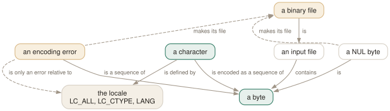

Day 08
When grep lies to you
Binary files that are not binary, and the environment variable that decides.
By the end of today you can
- explain why a perfectly good text file is reported as binary, and fix it two ways
- know which patterns
LC_ALL=Cmakes dramatically faster and which it does not touch - recognise a locale bug from the symptom, before you start debugging the pattern
grep decides what a character is, and it asks the environment
Every day so far has treated “a character” as obvious. It is not. What counts as a character — and therefore what . matches, what [[:alpha:]] contains, what -i folds together, and whether your file is text at all — is decided by the locale, which is to say by environment variables that you probably did not set deliberately.
This is where grep stops being a tool you configure and starts being a tool that is configured around you. There is no flag for most of it; there are only LC_ALL, LC_CTYPE, LC_COLLATE and LANG, consulted in that order of precedence, and falling back to the C locale when none of them is set.

LC_ALL=C in front of a command — you have changed what counts as a character, and with it whether the file is binary, whether . matches one byte or three, and how much work grep must do per byte.The binary file that is not binary
grep calls a file binary when it finds either a NUL byte or improperly encoded data — bytes that are not a valid character in the current locale. On finding one it stops printing lines, writes a note to standard error, and carries on matching.
$ printf 'hello\0world\nmatch me\n' > bin.dat
$ grep match bin.dat
grep: bin.dat: binary file matches
$ echo $?
0
$ grep -c match bin.dat
1
Note carefully what happened. Standard output got nothing, standard error got a note, and the exit status is 0 because a line was selected. The matching worked perfectly; only the printing was suppressed, which is why -c and -l still give the right answers.
Now the version that catches people:
$ printf 'caf\xe9 match\nplain match\n' > latin.txt
$ grep match latin.txt
plain match
grep: latin.txt: binary file matches
$ LC_ALL=C grep match latin.txt | cat -v
cafM-i match
plain match
-a/--binary-files=text- Print the lines anyway. The bytes reach your terminal unfiltered, so pipe it somewhere rather than looking at it.
-I/--binary-files=without-match- Treat a binary file as containing no matches at all. This is what you want inside
grep -rover a tree with object files in it. LC_ALL=C- Redefine “character” as “byte”, so nothing can be an encoding error. Usually the right answer for log triage.
The speed difference, and where it actually is
The folklore is that LC_ALL=C makes grep much faster. The folklore is right about the size of the effect and wrong about when it applies. On a 20 MB file:
pattern en_US.UTF-8 C ratio
-------------------------------------------------------
[a-z]\{4\}x 0.72 s 0.03 s ~24x
zzzz (plain literal) 0.01 s 0.01 s none
The gain comes from not decoding. A pattern involving bracket expressions, named classes, case folding or . forces grep to work out where each character starts and ends; in the C locale that question is free, because every byte is a character. A literal string never asks the question at all — it goes through a Boyer-Moore search over raw bytes in both locales.
Collation, and a warning that has aged
LC_COLLATE governs range expressions. The manual warns that outside the C locale [a-d] “might be equivalent to [abcd] or [aBbCcDd] or some other bracket expression, or it might fail to match any character, or … it might be invalid”.
The durable advice is the one from Day 3: write [[:lower:]] rather than [a-z] when you mean a category, and [abcd] when you mean those four characters. Neither depends on collation at all.
POSIXLY_CORRECT changes parsing, not matching
By default grep permutes its arguments: options found after the file names are moved to the front and honoured. POSIX forbids that, and setting POSIXLY_CORRECT restores the strict reading.
$ grep ERROR app.log -c
2
$ POSIXLY_CORRECT=1 grep ERROR app.log -c
app.log:ERROR timeout talking to db
app.log:ERROR timeout talking to db
grep: -c: No such file or directory
Read the second one carefully: -c did not merely stop working, it became a second file operand. That pushed grep over the two-file threshold from Day 6, so the matching lines acquired a filename prefix, and then the non-existent file pushed the exit status to 2. One unset variable changed the output format and the status.
The manual also claims this variable changes “invalid” to “illegal” in option error messages. It does not: 3.12 says invalid option either way. Argument permutation is the whole of the observable difference.
Today's habit
When a grep behaves differently in CI, in cron, in a container or on a colleague's machine, check the locale before you touch the pattern. locale with no arguments prints what grep is actually going to use, and it is the answer far more often than the regular expression is.
# ~/grep-recipes.sh
#
# Day 8: byte-exact and fast. For log triage over large or dirty files.
# Changes what -i and [[:alpha:]] mean - do not use it on real prose.
LC_ALL=C grep -c '[[:digit:]]\{4\}' bigfile
# Day 8: a 'binary' file with no NUL in it has an encoding error.
# -a to see the lines anyway, -I to skip such files during recursion.
grep -a PATTERN dirty.log
grep -rI PATTERN .
# Day 8: first thing to check when a grep behaves differently elsewhere.
locale
New vocabulary
Options
| Option | Does |
|---|---|
--binary-files=TYPE | TYPE is binary (default), text or without-match. |
-a, --text | Treat binary input as text. Equivalent to --binary-files=text. |
-I | Treat binary input as non-matching. Equivalent to --binary-files=without-match. |
LC_ALL | Overrides every locale category at once. The variable to set in a script. |
LC_CTYPE | Decides the character encoding: what a character is, and what is whitespace. |
LC_COLLATE | Decides collating order, which is what range expressions like [a-z] consult. |
LANG | The fallback when neither LC_ALL nor the specific LC_* variable is set. |
POSIXLY_CORRECT | Stops grep permuting options after file names. Changes parsing, not matching. |
Drillsdo these in a real terminal, today
Self-check
Answer out loud first, then unfold.
A UTF-8 log file from a customer makes grep ERROR customer.log print a couple of lines and then stop, with “binary file matches” on stderr. The file opens fine in your editor. Nothing in it is a NUL byte.
The file is not valid UTF-8 somewhere — a stray Latin-1 byte, a truncated multibyte sequence, a mangled emoji. In a UTF-8 locale those bytes are not characters, and grep counts “improperly encoded data” as binary exactly as it counts NUL bytes. It then suppresses lines containing the bad bytes and tells you on stderr.
Two fixes, and they are not equivalent. grep -a forces the lines out but they will still be mis-decoded on your terminal. LC_ALL=C grep changes the definition of “character” to “byte”, so nothing is an encoding error any more, matching is byte-exact, and it is usually faster too. For log triage, LC_ALL=C is the better instinct.
You read that LC_ALL=C makes grep “ten times faster”, so you put it in front of every grep in a build script. Timings do not improve. Were you lied to?
Half lied to. The speedup is real but specific to patterns that have to reason about characters: bracket expressions, named classes, case folding, . — anything where grep must decode multibyte sequences to know what it is looking at. On a 20 MB file, [a-z]\{4\}x took 0.72 s in en_US.UTF-8 and 0.03 s in C, which is roughly 24×.
A plain literal search on the same file took 0.01 s in both locales, because the Boyer-Moore fast path never decodes anything. So LC_ALL=C is worth reaching for when the pattern is character-classy and the input is large, and is noise otherwise. Measure before you sprinkle it everywhere.
The manual page says that under POSIXLY_CORRECT, unrecognised options are diagnosed as “illegal” rather than “invalid”. You test it and get “invalid option” either way. Which behaviour does the variable actually change?
The wording claim is simply stale — GNU grep 3.12 says invalid option -- 'Q' with and without the variable set. What POSIXLY_CORRECT genuinely changes is argument permutation: by default grep moves options that appear after file names to the front and honours them, and POSIX requires that they be treated as file names instead.
So grep pattern file.txt -c prints a count normally and fails with -c: No such file or directory under the variable. That is a real behavioural difference in something as ordinary as a shell script, triggered by an environment variable that a caller may have set for entirely unrelated reasons. Put options before operands and it can never bite you.
Your CI grep matches accented words correctly on your laptop and fails inside the container. Same image, same file, same pattern, same grep version.
The container has no locale set, so everything falls back to C. In the C locale each byte is a separate character, case folding is ASCII-only, and a UTF-8 “é” is two bytes that . matches as two characters rather than one. A pattern like caf. or -i 'CAFÉ' changes meaning.
This is the single most common “works on my machine” bug involving grep, and it has nothing to do with grep. Decide explicitly which behaviour you want and pin it: LC_ALL=C for byte-exact, fast, encoding-agnostic matching, or LC_ALL=C.UTF-8 when you genuinely need character semantics and do not want to depend on a full locale being installed.
Cheat sheet
# a file is BINARY if it has a NUL byte OR bytes that are not valid
# characters IN THE CURRENT LOCALE. Latin-1 text is binary under UTF-8.
# -> lines suppressed, note on STDERR, exit status still 0
# -> -c and -l still give the right answers; only printing stopped
-a print them anyway (--binary-files=text)
-I treat the file as non-matching (--binary-files=without-match)
LC_ALL=C 'character' becomes 'byte': nothing is an encoding error,
matching is byte-exact, and character-class patterns get much faster
# measured on 20MB: [a-z]\{4\}x 0.72s UTF-8 vs 0.03s C (~24x)
# a plain literal 0.01s vs 0.01s (no gain)
LC_ALL > LC_CTYPE/LC_COLLATE > LANG > C. 'locale' prints what you have.
POSIXLY_CORRECT=1 options after operands become FILENAMES, not options.
Everything through Day 08
Commands
| Command | Does |
|---|---|
grep root /etc/passwd | Search one named file. No filename prefix on the output. |
grep root /etc/passwd /etc/group | Search several. Output gains a file: prefix automatically. |
grep root | No file operand: read standard input. From a terminal, this waits for you. |
grep -r root | No file operand and -r: search the working directory instead. |
cmd | grep root - | A file operand of - is standard input, mixable with real files. |
echo $? | Read the status grep just returned. The habit this whole day is about. |
grep -e -v file.txt | Search for the literal string -v. -e protects a pattern that starts with a dash. |
grep -f patterns.txt data.txt | Take patterns from a file, one per line. The workhorse for long lists. |
cut -f1 ids.csv | grep -f - data.txt | Patterns from a pipe. -f - reads them from standard input. |
Options
| Option | Does |
|---|---|
-V, --version | Print the version and exit. Know which grep you are actually running. |
--help | Print the option summary and exit. Shorter and better organised than the man page. |
-- | End of options. Everything after it is a pattern or a filename, never a flag. |
-i, --ignore-case | Match regardless of case. What counts as “the same letter” depends on the locale. |
--no-ignore-case | Cancel an earlier -i. The last of the two on the line wins. |
-v, --invert-match | Select the lines that did not match. Applied once, after all patterns. |
-w, --word-regexp | Require the matched substring to be bounded by non-word characters or line ends. |
-x, --line-regexp | Require the match to be the entire line. Silently overrides -w. |
-e PAT, --regexp=PAT | Add a pattern. Repeatable, and combinable with -f. |
-f FILE, --file=FILE | Add every line of FILE as a pattern. An empty file matches nothing at all. |
-y | Undocumented synonym for -i. In neither the man page nor --help, but 3.12 accepts it. |
. | Match any single character. Whether it matches an encoding error is unspecified. |
[abc] | Match one character from the list. |
[^abc] | Match one character not in the list. The ^ must come first. |
[a-d] | A range. In the C locale, ASCII order; elsewhere the standard says it is unspecified. |
[[:digit:]] | A named class. The outer brackets are yours, the inner ones are part of the name. |
^ and $ | Anchor to the start and end of a line. They match a position, not a character. |
\< and \> | Anchor to the start and end of a word. A GNU extension. |
\b and \B | Anchor at, and not at, a word edge. \b is either edge; \< is only the left. |
\w and \W | Shorthand for [_[:alnum:]] and [^_[:alnum:]]. Note the underscore. |
* | Zero or more of the preceding item. The only repetition operator BRE spells the same way. |
? and + | At most one, and at least one. In BRE you must write \? and \+. |
{n,m} | Between n and m times. {,m} with no lower bound is a GNU extension. |
| | Alternation, and the loosest-binding operator there is. BRE spells it \|. |
(...) | Group, to override precedence. BRE spells it \(...\). |
\1 … \9 | Re-match the exact text the nth group captured. Slow, and worth avoiding. |
-E, --extended-regexp | Extended syntax: the operators above are bare. What you usually want. |
-G, --basic-regexp | Basic syntax: ? + { | ( ) need backslashes. The default. |
-F, --fixed-strings | No regex at all. Every pattern is a literal string, and it is the fastest matcher. |
-c, --count | Print the number of selected lines per file, not the number of matches. |
-l, --files-with-matches | Print each filename that had a match, and stop reading that file at the first one. |
-L, --files-without-match | Print each filename that had none. Read the gotcha about its exit status. |
-o, --only-matching | Print each matched substring on its own line. Non-overlapping, empty matches dropped. |
-q, --quiet, --silent | Print nothing; exit 0 on the first match. The right way to use grep as a test. |
-m NUM, --max-count=NUM | Stop after NUM selected lines. -m0 reads nothing at all. |
-s, --no-messages | Suppress error messages about unreadable files. Does not change the exit status. |
--color[=WHEN] | WHEN is never, always or auto. Nothing else, and abbreviations are refused. |
GREP_COLORS | Colon-separated SGR capabilities. Defaults to ms=01;31:mc=01;31:sl=:cx=:fn=35:ln=32:bn=32:se=36. |
-A NUM, --after-context=NUM | Print NUM lines after each match. |
-B NUM, --before-context=NUM | Print NUM lines before each match. |
-C NUM, --context=NUM | Print NUM lines on both sides. |
-NUM | Bare number: identical to -C NUM. grep -2 pat is the one worth typing. |
--group-separator=SEP | Print SEP instead of -- between non-adjacent groups. |
--no-group-separator | Print no separator at all. What you want before piping into another tool. |
-n, --line-number | Prefix each output line with its 1-based line number. |
-H, --with-filename | Force the filename prefix. Automatic with two or more files. |
-h, --no-filename | Suppress the filename prefix. Automatic with one file. |
-b, --byte-offset | Prefix the 0-based byte offset. With -o, the offset of the match itself. |
-T, --initial-tab | Line the content up on a tab stop, and pad the numeric fields to a fixed width. |
--label=LABEL | Call standard input LABEL instead of (standard input). |
-r, --recursive | Descend into directories, following symbolic links only if named on the command line. |
-R, --dereference-recursive | Descend, following every symbolic link. Can loop forever on a cyclic tree. |
-d ACTION, --directories=ACTION | read (the default, which fails on Linux), skip, or recurse — the last being -r. |
-D ACTION, --devices=ACTION | read (default) or skip, for devices, FIFOs and sockets. skip stops grep blocking on a pipe. |
--include=GLOB | Search only files whose base name matches GLOB. |
--exclude=GLOB | Skip files whose base name matches GLOB. |
--exclude-dir=GLOB | Skip directories whose base name matches GLOB. Trailing slashes are ignored. |
--exclude-from=FILE | Read a list of --exclude globs from a file, one per line. |
--binary-files=TYPE | TYPE is binary (default), text or without-match. |
-a, --text | Treat binary input as text. Equivalent to --binary-files=text. |
-I | Treat binary input as non-matching. Equivalent to --binary-files=without-match. |
LC_ALL | Overrides every locale category at once. The variable to set in a script. |
LC_CTYPE | Decides the character encoding: what a character is, and what is whitespace. |
LC_COLLATE | Decides collating order, which is what range expressions like [a-z] consult. |
LANG | The fallback when neither LC_ALL nor the specific LC_* variable is set. |
POSIXLY_CORRECT | Stops grep permuting options after file names. Changes parsing, not matching. |